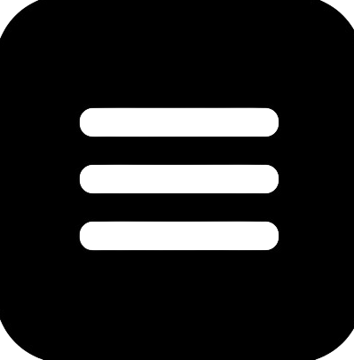
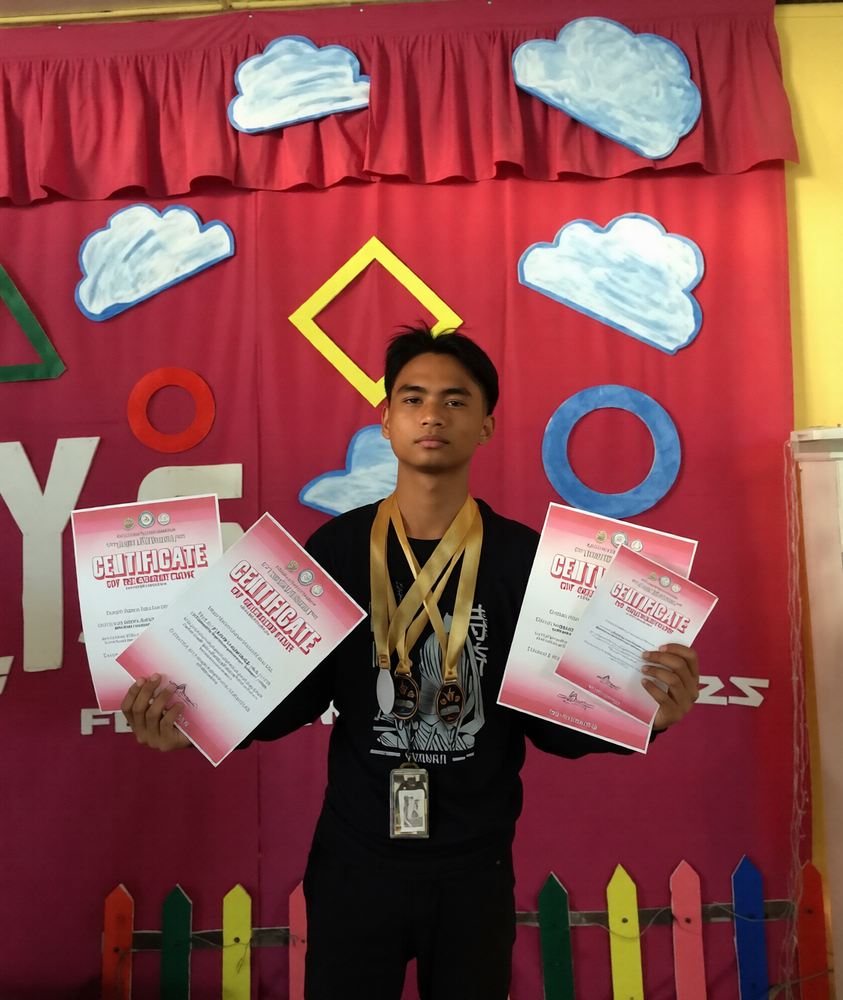
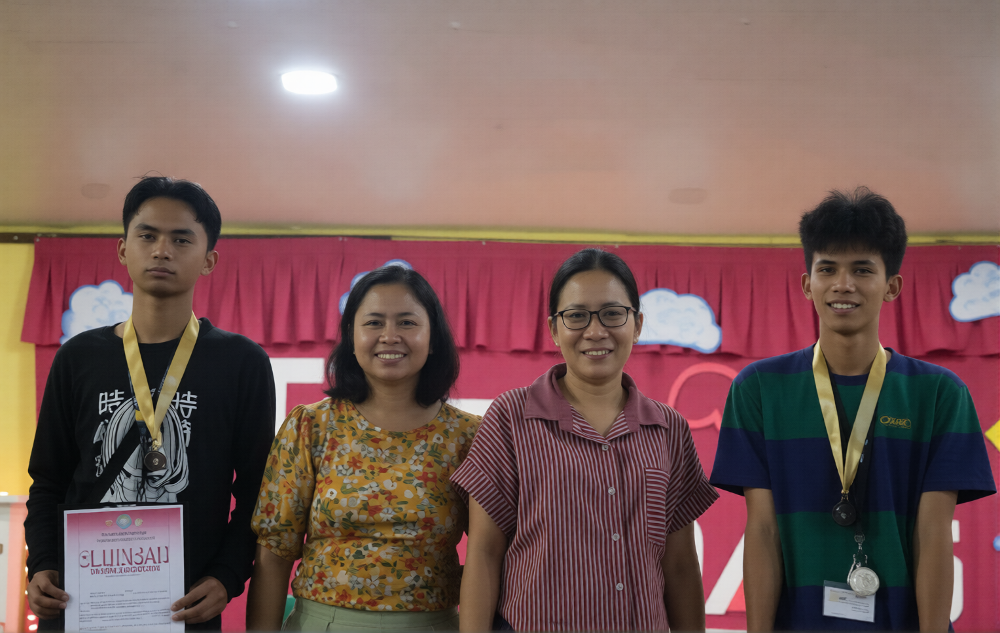

HELLO, I'M
John Salazar
Web Developer
I'm a passionate aspiring web developer who enjoys creating modern, creative, and responsive websites.
Freelancing since
2021
Projects shipped
16
Graduating
BSIT 2026

About me
I'm John Albert Salazar, a self-employed freelance programmer from Iloilo City since 2021. I specialize in helping students with their capstone projects and thesis through custom commissions.
Currently completing my BSIT at West Visayas State University — Janiuay Campus (Class of 2026). My capstone thesis is "Kingdom of Words" — a 2D RPG game designed to make learning French engaging for Filipino students.
When I'm not coding, I'm exploring new frameworks, designing game mechanics, or helping fellow students level up their academic projects.

ACHIEVEMENTS

My Awards
achieved champion titles in Java Programming and Web Designing,
secured 2nd place in Python Programming,
and was nominated for a Research Paper, showcasing my technical skills,
creativity, and dedication to academic excellence.

My Awards
Champion in Prototyping
champion in prototyping for creating an innovative and user-friendly design,
that showcased creativity, functionality, and effective problem-solving skills.
TECHSTACK


WORK EXPERIENCE
Jan 2026 – Apr 2026
HR Recruitment Intern
WNS — Iloilo City
- Assisted app4licants throughout the recruitment and onboarding process in a fast-paced environment.
- Managed candidate records, recruitment documentation, and interview scheduling support.
- Provided administrative and email support to ensure timely communication with applicants.
- Collaborated with the HR team to maintain organized recruitment workflows and candidate tracking.
- Developed strong communication, multitasking, and professional customer service skills during internship training.
Aug 2022 – Jan 2026
Freelance Web Developer
Self-Employed — Janiuay, Iloilo
- Developed responsive and user-friendly websites using HTML, CSS, JavaScript, PHP, and MySQL.
- Designed modern website interfaces focused on functionality, accessibility, and user experience.
- Built academic, portfolio, and system-based projects for clients and student developers.
- Customized website layouts and implemented mobile-responsive designs for different devices.
- Collaborated with clients to gather project requirements and deliver functional web solutions on time.
EDUCATION
West Visayas State University - Janiuay Campus
Bachelor of Science in Information Technology
August 20, 2022 - May 26, 2026
Janiuay, Iloilo
My Personal Projects

Kingdom of Words
A 2D RPG for learning French. Explore dungeons, battle enemies with vocabulary and unlock the story. Built as my WVSU capstone.

Bakeshop Sales & Inventory
Complete POS and inventory management system for small bakeshops. Real-time stock tracking, sales reports, user management with role-based access control.
WanderLust Travel
Modern, fully responsive travel booking website with animated sections, destination gallery, interactive booking flow and multi-step reservation system.
Animax Gallery
Animax Gallery is a web-based anime wallpaper gallery designed for anime fans to explore and browse a collection of visually appealing wallpapers. The website provides an organized and user-friendly interface that allows users to view anime images and enjoy different artwork styles. It focuses on creating an engaging browsing experience with an attractive layout and easy navigation, making it a convenient place for users to discover wallpapers for their devices.
Comfort Room Utilization Report System
Comfort Room Utilization Report System is a web-based management system designed to monitor and report comfort room usage. It provides separate access for checkers and administrators, helping organize utilization records and review submitted reports. The system aims to simplify comfort room monitoring, improve record management, and support more efficient facility management through a centralized reporting interface.
J.A BarberShop Website
J.A BarberShop Website is a modern business website designed to showcase grooming services and provide convenient online appointment booking. It features classic haircuts, skin fades, beard trimming, hot towel shaves, and kids' haircuts, along with service prices, customer reviews, and business information. Its stylish, responsive layout helps customers explore services and schedule appointments with ease.
Client Projects
Zee Rodriguez Portfolio
Zee Rodriguez Portfolio is a professional portfolio website showcasing services in business operations, social media management, web management, AI automation, and executive support. It features an interactive layout where visitors can explore professional roles, view project samples, and learn about the work process. The website helps potential clients discover suitable services and connect directly for business inquiries.
Josielyn Rosalejos Portfolio
Josielyn Rosalejos Portfolio is a professional website showcasing her experience in customer service, lead generation, telesales, and virtual assistance. It highlights her career background, skills, software tools, certifications, and remote work setup. With a clean and organized layout, the website helps potential employers and clients explore her qualifications and connect with her for remote work opportunities.
Archie Sarmiento Portfolio
Archie Sarmiento Portfolio is a personal website showcasing his development skills, technical expertise, and projects. It highlights his frontend skills in HTML, CSS, and JavaScript, alongside backend technologies such as PHP, MySQL, and Node.js. The portfolio presents his technical abilities and growth as an aspiring developer.
Diether Ang Portfolio
Diether Ang Portfolio is a professional website showcasing his experience in customer service, e-commerce support, healthcare assistance, and escalation management. It highlights his communication skills, CRM knowledge, and ability to handle customer concerns across multiple channels. The portfolio presents his qualifications and career achievements to help potential employers and clients explore his expertise.
Ghein Portfolio
Ghein Portfolio is a personal website designed to showcase professional skills, creative work, and completed projects. It presents the portfolio owner's background, expertise, and accomplishments through an organized and visually engaging layout, helping potential clients and employers explore their capabilities and professional experience.
Kervel Sobrevilla Portfolio
Kervel Sobrevilla Portfolio is a professional website showcasing expertise in social media management, digital marketing, graphic design, and video editing. It highlights experience creating promotional content, designing branded graphics, managing social media platforms, and analyzing audience engagement. The portfolio features creative projects, professional experience, and certifications to help potential clients explore available services and expertise.
Abigail Malinit Portfolio
Abigail Malinit Portfolio is a professional website showcasing her experience in virtual assistance, administrative support, and business operations. It highlights her skills in calendar and email management, report preparation, project coordination, data analysis, and workflow automation. The portfolio also features her professional experience, certifications, and technical tools, helping potential clients explore her qualifications for remote administrative support.
Jairus Cruz Portfolio
Jairus Cruz Portfolio is a personal website showcasing technical skills, creative projects, and professional development. It presents Jairus's background, capabilities, and completed work through an organized and visually engaging interface, allowing potential clients and employers to explore his work and professional expertise.
Mark Jenzer Portfolio
Mark Jenzer Portfolio is a professional website showcasing his expertise in virtual assistance, executive support, quality control, social media management, graphic design, and music education. It highlights his experience supporting international clients, managing administrative workflows, preparing reports, organizing digital records, and using AI tools to improve productivity. The portfolio also presents his teaching experience, musical background, and professional achievements.
Maria Kathryn Armenta Portfolio
Maria Kathryn Armenta Portfolio is a professional website showcasing her expertise in digital marketing, virtual assistance, social media management, and administrative support. It highlights her experience in content planning, graphic design, email marketing, lead generation, customer service, and property management. The portfolio features marketing campaigns, creative materials, certifications, and professional experience, helping potential clients explore her services and expertise.
Certificate


GET INTOUCH
Whether you're a student needing help with your thesis, or a business needing a custom system — I'm your operator. Let's build something that matters.
Facebook LinkedIn Email +63 966 192 0738